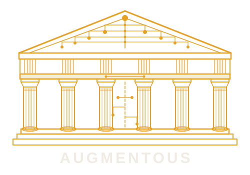

Jamie Campbell helps engineering teams use AI as a precision instrument — not a wrecking ball. Twenty years of frontend engineering. Zero tolerance for vibe coding.
Vibe coding breaks things. Junior AI usage creates technical debt faster than it clears it. And in most engineering orgs, no one has the seniority — or the framework — to govern what the AI is actually doing to the codebase.
Legacy systems don't forgive careless automation. A missed accessibility violation is an ADA lawsuit. An unchecked refactor is a regression in production. An unsupervised merge is a 3am incident.
That's the gap Augmentous Systems fills. We install the governance layer that keeps AI moving fast without moving recklessly.
Install human-in-the-loop guardrails that keep AI changes auditable, reversible, and senior-approved. No autonomous merges. No unchecked rewrites.
Identify accessibility, security, and architectural liabilities before they become incidents. ADA compliance, dependency rot, and build-system decay — all surfaced and prioritized.
Design and implement AI agent systems that propose changes, not impose them. The right AI does the work. The senior architect makes the call.
Senior-level AI governance oversight for engineering teams that need the expertise without the full-time headcount. Embedded, accountable, and on-call.
A show for engineering leaders navigating the age of AI rot. Real workflows. Real legacy code. Real guardrails. Watch an AI governance system get built — and stopped — in real time.
I started writing code when the web was young — Flash, ActionScript, hand-coded HTML before frameworks had opinions. Twenty years later I've watched every generation of tools promise to replace the engineer and fail. AI won't be different. But it will be dangerous in the hands of teams without a governance framework.
"The senior engineer's job isn't to write the code anymore. It's to decide what the AI is allowed to do with it."
Today I work as Principal AI Agentic Architect at WGA Advisors, designing systems that integrate fragmented enterprise platforms using agentic workflows and RAG-based retrieval. I also carry a full-time senior engineering role at JLOOP and run Augmentous Systems as a consulting practice for teams that need senior AI governance without the senior headcount cost.
I built this practice because the gap between legacy systems and modern AI tooling is where the most expensive problems live. Most teams are already using AI. Very few have a senior architect watching the blast radius.
Based in Davis, California. Available for fractional engagements, advisory roles, and enterprise consulting.
Whether you're an engineering leader with a legacy problem or a recruiter with a relevant opportunity — I'm direct and easy to reach.
jamie@augmentous.ai